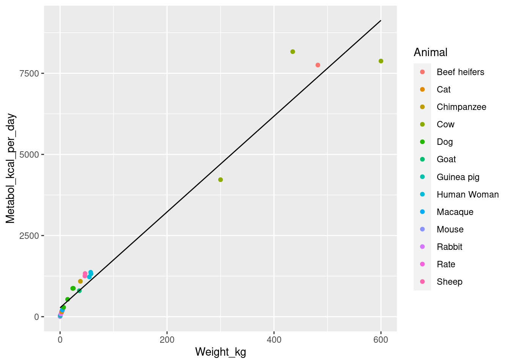

Kleiber’s question is: is there a systematic relationship between weight and metabolic rate? We are interested in this question because it can shed light on fundamental features of animal biology, not because we need to know metaboloic rate for some animal who we managed to get onto a scale.
Question: Is this an inference problem or a prediction problem?
Animal metabolic data
Let’s look at a simple linear regression of metabolism on weight.
Estimate Std. Error t value Pr(>|t|)
(Intercept) 273.85249 101.7051223 2.692613 1.272021e-02
Weight_kg 14.76166 0.5497794 26.850158 2.046497e-19

What do you think of this fit?
Unit change
Question: We’re mixing up English units (kcal) and metric units (Kg). What would happen to the regression of we regress on Metabol_joule_per_day, using the conversion rate 4184 Joules per kcal?
which appears roughly consistent with what we’ve found here. The reason for this scaling has been the subject of a lot of research since then and is beyond the scope of the present lecture.
Source Code
---title: "Transforming responses."format: html: code-fold: false code-tools: true include-before-body: - file: ../macros.md---$\,$ <!-- Prevent latex macros from showing -->```{r}#| echo: false#| output: falselibrary(tidyverse)library(gridExtra)joule_per_kcal <-4184kleiber_df <-read.csv("../datasets/kleiber/kleiber.csv") %>%mutate(Metabol_joule_per_day=joule_per_kcal * Metabol_kcal_per_day)head(kleiber_df)kleiber_comp_df <-filter(kleiber_df, Comparable)```{{< pagebreak >}}# Goals- Discuss transformations of responses - Effect of re-scaling and the units of the coefficients - Example: Kleiber's scaling law - The log transformation - Interpreting transformed regressions{{< pagebreak >}}# Animal metabolic data```{r}#| echo: false#| display: falsejoule_per_kcal <-4184kleiber_df <-read.csv("../datasets/kleiber/kleiber.csv") %>%mutate(Metabol_joule_per_day=joule_per_kcal * Metabol_kcal_per_day)kleiber_comp_df <-filter(kleiber_df, Comparable)``````{r}#| echo: falseanimals_list <-paste(unique(kleiber_df$Animal), collapse=", ")```Let's look at data taken from Table 2 of Kleiber 1947, "Body Size andMetabolic Rate." The data consists of weight (in Kg) and metabolic rate (in kCal per day)for the following animals:`{r} animals_list`.Kleiber's question is: **is there a systematic relationship between weightand metabolic rate**? We are interested in this question because it can shed light on fundamental features of animal biology, not because we needto know metaboloic rate for some animal who we managed to get onto a scale. **Question:** Is this an inference problem or a prediction problem?{{< pagebreak >}}# Animal metabolic dataLet's look at a simple linear regression of metabolism on weight.```{r}lm_base_fit <-lm(Metabol_kcal_per_day ~1+ Weight_kg, kleiber_df)print(summary(lm_base_fit))```There is a relationship between weight and metabolism, and it'sstatistically significant!**Class dismissed?**{{< pagebreak >}}# OutliersLet's plot the data. What do you think of the fit now?```{r}#| echo: falseggplot(kleiber_df) +geom_point(aes(x=Weight_kg, y=Metabol_kcal_per_day, shape=Comparable, color=Animal), size=3) +geom_line(aes(x=Weight_kg, y=predict(lm_base_fit, kleiber_df)))```**Moral:** Always plot your data.Note that a few points were flagged by Kleiber as not havingcomparable metabolic rates, including the whale. Let'sdo the same analysis without them.{{< pagebreak >}}# Now without outliers```{r}lm_lin_fit <-lm(Metabol_kcal_per_day ~1+ Weight_kg, kleiber_comp_df)print(summary(lm_lin_fit)$coefficients)``````{r}#| echo: falseggplot(kleiber_comp_df) +geom_point(aes(x=Weight_kg, y=Metabol_kcal_per_day, color=Animal)) +geom_line(aes(x=Weight_kg, y=predict(lm_lin_fit, kleiber_comp_df)))```What do you think of this fit?{{< pagebreak >}}# Unit change**Question:** We're mixing up English units (kcal) and metric units (Kg). Whatwould happen to the regression of we regress on `Metabol_joule_per_day`,using the conversion rate `{r} joule_per_kcal` Joules per kcal?```{r}lm_joule_fit <-lm(Metabol_joule_per_day ~1+ Weight_kg, kleiber_comp_df)coefficients(lm_joule_fit)coefficients(lm_lin_fit)```The ratio of the new to the old coefficients is the unit change, as expectedfrom the fact that $\betavhat = (\X^\trans \X)^{-1} \Y$.```{r}coefficients(lm_joule_fit) /coefficients(lm_lin_fit)joule_per_kcal```{{< pagebreak >}}# More careful thoughtHere's a chain of reasoning that leads to a different regression.- Different animals' density is approximately constant - $\Rightarrow$ Animal weight in kg $\propto$ Animal volume in $m^3$- Different animals' shape is approximately the same - $\Rightarrow$ Animal surface area in $m^2$ $\propto$ Animal volume in $(m^3)^{2/3}$ $\propto$ Animal kg$^{2/3}$- Metabolic rate is proportional to surface area - First law of thermodynamics - All generated heat must be radiated - Rate of radiation is proportional to surface area - $\Rightarrow$ Animal metabolic rate in Joules $\propto$ Animal surface area in $m^2$**Testable hypothesis:** Animal metabolic rate in Joules $\propto$ Animal kg$^{2/3}$.{{< pagebreak >}}# Testing the hypothesis**Testable hypothesis:** Animal metabolic rate in Joules $\propto$ Animal kg$^{2/3}$.**Question:** How can we test this with regression?What's wrong with doing a regressor transform and regressing $\y_n \sim \x_n^{2/3}$,where $\y_n$ is metabolism and $\x_n$ is weight?{{< pagebreak >}}# Testing the hypothesis**Testable hypothesis:** Animal metabolic rate in Joules $\propto$ Animal kg$^{2/3}$.A better idea:$$\begin{aligned}\yhat_n ={} \beta_0 \x_n^{\beta_1}\quad\quad\Leftrightarrow\quad\quad\log \yhat_n = \log \beta_0 + \beta_1 \log \x_n.\end{aligned}$$Let's regress $\log \y_n \sim \log \x_n$, and see whether the coefficientis $\betahat_1 \approx 2/3$.Note that the errors we're trying to minimize mean something different! Compare$$\begin{aligned}\y_n =& \gamma_0 + \gamma_1 \x_n^{2/3} + \eta_n\end{aligned}$$versus$$\begin{aligned}\log \y_n =& \beta_0 + \beta_1 \x_n + \res_n \quad \Rightarrow\\\y_n ={}& \exp(\beta_0) \x_n^{\beta_1} \exp(\res_n).\end{aligned}$$Minimizing $\sumn \eta_n^2$ is very different from minimizing $\sumn \res_n^2$.{{< pagebreak >}}# Log fit```{r}lm_log_fit <-lm(log10(Metabol_joule_per_day) ~1+log10(Weight_kg), kleiber_comp_df)``````{r}#| echo: falseggplot(kleiber_df) +geom_point(aes(x=log10(Weight_kg), y=log10(Metabol_joule_per_day), color=Animal, shape=Comparable), size=3) +geom_abline(aes(intercept=coefficients(lm_log_fit)["(Intercept)"], slope=coefficients(lm_log_fit)["log10(Weight_kg)"]))```{{< pagebreak >}}# Compare the two fits on their respective scales```{r}#| echo: falsegrid.arrange(ggplot(kleiber_comp_df, aes(x=Weight_kg)) +geom_point(aes(y=Metabol_joule_per_day, color=Animal)) +geom_line(aes(y=predict(lm_joule_fit, kleiber_comp_df), linetype="linear fit")) +geom_line(aes(y=10^predict(lm_log_fit, kleiber_comp_df), linetype="log linear fit")),ggplot(kleiber_comp_df, aes(x=log10(Weight_kg))) +geom_point(aes(y=log10(Metabol_joule_per_day), color=Animal)) +geom_line(aes(y=log10(predict(lm_joule_fit, kleiber_comp_df)), linetype="linear fit")) +geom_line(aes(y=predict(lm_log_fit, kleiber_comp_df), linetype="log linear fit")),ncol=2)```{{< pagebreak >}}# What about our hypothesis?```{r}summary(lm_log_fit)$coefficients```Note that $$`{r} summary(lm_log_fit)$coefficients["log10(Weight_kg)", "Estimate"]` \ne 2 / 3 \approx 0.666.$$We haven't talked about standard errors yet, but note that$$`{r} summary(lm_log_fit)$coefficients["log10(Weight_kg)", "Estimate"]`- 0.666 =`{r} summary(lm_log_fit)$coefficients["log10(Weight_kg)", "Estimate"] - 2/3`,$$which is very large relative to the reported "standard error." (We will revisit this examplelater to investigate the assumptions behind the standard error, and find that they'renot likely to apply in this case.)In fact, "Kleiber's law" refers to the relationship$$\textrm{Metabolism} \propto \textrm{Weight}^{3/4},$$which appears roughly consistent with what we've found here. The reason for this scaling has been the subject of a lot of research since then and is beyond thescope of the present lecture.